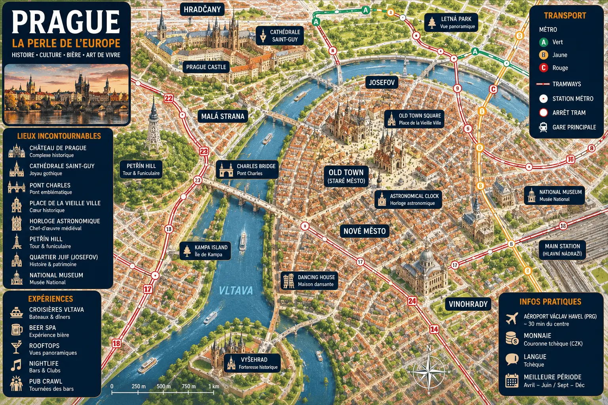

Prague illumine l’Europe de sa magie médiévale
Explore Prague entre château, Vieille Ville et bière tchèque.
Pont Charles • Château • Vieille Ville • Bière tchèque • Vltava
L’un des ponts les plus célèbres d’Europe, magique au lever du soleil.
Un immense ensemble historique dominant les toits rouges de la ville.
Brasseries historiques, beer spa et bars typiques au cœur de Prague.
Vieille Ville, Malá Strana et Vinohrady se découvrent facilement.
Prague est l'une des villes les plus romantiques et mystérieuses d'Europe. Capitale de la Tchéquie, elle mêle architecture gothique, ruelles médiévales, ponts historiques, châteaux et ambiance bohème.
De la Vieille Ville au Château de Prague, de la Vieille Ville à Malá Strana, chaque quartier révèle une atmosphère différente entre façades colorées, places animées et vues spectaculaires sur la Vltava.
Entre visites culturelles, brasseries tchèques, croisières sur la rivière, rooftops, concerts classiques et marchés de Noël, Prague offre un séjour accessible, magique et très dépaysant.

Au-delà du Pont Charles et du Château de Prague, certaines expériences permettent de découvrir une Prague plus authentique, plus romantique et souvent plus mémorable que les visites classiques.

Avant l'arrivée des visiteurs, le Pont Charles révèle toute sa magie. Les statues historiques, les tours gothiques et les reflets sur la Vltava offrent l'une des plus belles ambiances d'Europe.
Une croisière permet d'admirer les ponts historiques, le Château de Prague et les façades colorées de la Vieille Ville sous un angle totalement différent.
Découvrir l’expérience →Dominant la ville depuis plus de mille ans, le plus grand complexe de château au monde offre des panoramas exceptionnels et un voyage à travers l'histoire tchèque.
Réserver la visite →Sous les rues de la Vieille Ville se cache un réseau fascinant de caves, passages et salles médiévales datant de plusieurs siècles. Une plongée unique dans l'histoire secrète de Prague.
Découvrir l’expérience →Entre l'horloge astronomique, les ruelles pavées et les façades colorées, le centre historique de Prague se découvre sans itinéraire précis.
Prague est l'une des grandes capitales européennes de la musique classique. Églises, palais et salles historiques accueillent des concerts presque chaque soir.
Réserver le concert →Surnommée la petite Tour Eiffel de Prague, la tour de Petřín offre l'un des plus beaux panoramas sur les toits rouges, les clochers et la Vltava.
Réserver la visite →Depuis les meilleurs rooftops de la ville, les clochers, les dômes et les ponts de Prague composent un panorama spectaculaire particulièrement au coucher du soleil.
Utilise les tramways historiques, le métro et les bus pour explorer Prague rapidement et à moindre coût.
ExplorerVoyage facilement entre Prague, Vienne, Budapest, Berlin et les grandes villes d'Europe centrale.
ExplorerLa Vieille Ville, Malá Strana et le quartier du Château se découvrent idéalement à pied au fil des ruelles historiques.
ExplorerLe cœur historique de Prague. Idéal pour une première visite, avec l'horloge astronomique, la place de la Vieille Ville et le Pont Charles accessibles à pied.
Situé au pied du Château de Prague, ce quartier romantique séduit par ses palais baroques, ses rues pavées et son atmosphère paisible.
Quartier élégant apprécié des habitants pour ses cafés, restaurants, parcs et son ambiance plus locale, tout en restant proche du centre historique.
Autour du Château de Prague, ce secteur offre des vues spectaculaires sur la ville et une atmosphère unique au cœur du patrimoine tchèque.
Un excellent compromis entre visites, shopping, transports et vie nocturne. Idéal pour profiter pleinement de Prague tout en restant central.
Comparez les hébergements dans les meilleurs quartiers de Prague.
Entre brasseries historiques, cuisine tchèque traditionnelle, cafés élégants et rooftops panoramiques, la gastronomie fait pleinement partie de l'expérience praguoise.

Prague est l'une des capitales mondiales de la bière. Les brasseries historiques permettent de découvrir les saveurs tchèques dans une ambiance authentique et conviviale.
Goulash, svíčková, knedlíky et spécialités locales offrent un véritable aperçu de la culture gastronomique tchèque.
Voir les restaurants →Entre places illuminées, façades historiques et ruelles pavées, les restaurants du centre historique offrent une atmosphère unique après le coucher du soleil.
Les cafés praguois perpétuent une longue tradition culturelle où écrivains, artistes et intellectuels se retrouvaient autrefois autour d'un café ou d'une pâtisserie.
Profiter d'un verre face aux toits rouges, aux clochers et au Château de Prague compte parmi les expériences les plus appréciées de la ville.
Découvrir les meilleures adresses →Au-delà de son centre historique, Prague constitue un excellent point de départ pour découvrir les châteaux, les villes médiévales et les paysages naturels les plus remarquables de Bohême.

Classée au patrimoine mondial de l'UNESCO, Kutná Hora est célèbre pour son ossuaire de Sedlec, sa cathédrale Sainte-Barbe et son riche passé minier.
Construit au XIVe siècle par Charles IV, ce château médiéval domine les collines boisées de Bohême et constitue l'une des excursions les plus populaires depuis Prague.
Souvent considérée comme la plus belle ville de Tchéquie, Český Krumlov séduit par son château monumental, ses ruelles médiévales et sa rivière sinueuse.
Falaises de grès, gorges sauvages, forêts profondes et panoramas spectaculaires font de ce parc national l'un des plus beaux espaces naturels d'Europe centrale.
Quelques informations pratiques permettent de préparer plus facilement votre séjour à Prague, que ce soit pour organiser vos visites, votre budget ou choisir la meilleure période pour partir.
Le tchèque est la langue officielle. Dans les zones touristiques, l'anglais est largement utilisé dans les hôtels, restaurants et attractions.
La Tchéquie utilise la couronne tchèque (CZK). Les cartes bancaires sont acceptées presque partout, mais il reste utile d'avoir un peu d'espèces.
Prague utilise les prises de type C et E avec une tension de 230 V. Les voyageurs européens n'ont généralement pas besoin d'adaptateur.
Deux à trois jours permettent de découvrir les incontournables de Prague. Quatre à cinq jours offrent davantage de temps pour explorer les quartiers et les environs.
Le printemps, l'été et le début de l'automne sont particulièrement agréables. Les marchés de Noël rendent également Prague magique durant l'hiver.
Prague reste l'une des capitales les plus abordables d'Europe. Comptez généralement entre 80 € et 180 € par jour selon l'hébergement, les activités et les restaurants choisis.
Prague mélange architecture médiévale, histoire européenne, culture tchèque, gastronomie locale et atmosphère romantique unique.
Entre le Pont Charles, les ruelles pavées, les toits rouges de la Vieille Ville, les brasseries historiques et les vues sur la Vltava, Prague possède l'une des atmosphères les plus magiques d'Europe.
Les tramways, le métro et la marche permettent d'explorer Prague facilement et à moindre coût.
La Vieille Ville, Malá Strana et Vinohrady regroupent de nombreuses brasseries, restaurants tchèques et cafés historiques.
Le Château de Prague, la Vieille Ville, les croisières sur la Vltava, les concerts classiques et les panoramas sur les toits rouges sont incontournables.